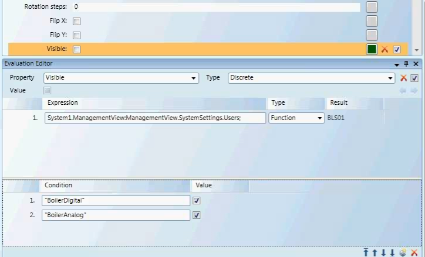

Evaluation Expressions and Properties
Evaluations are expressions and conditions applied to element or symbol property values to determine how an element or symbol behaves in a graphic. Property evaluations are the basis for creating animated graphics that automatically update to show a graphical representation of real time conditions of your system or facility.
There are five Evaluation Types you can apply to an expression: Simple, Linear, Discrete, Animated, and Multi. The type of animation or conditions required for your graphic will determine which evaluation type to use.
Evaluations and expressions are configured in the Evaluation Editor view.
The topics below provide an overview of working with the Evaluation Editor:
Expressions in the Evaluation Editor
Every property evaluation stems from the result of an expression that is used to determine how an image displays according to property values, expressions, and conditions. For example, the result of an evaluation to a property value determines which image or symbol instance to display or what color to apply to an element depending on the value of a property.
Expressions consist of a data point reference, for example, an object name or value followed by an optional operator with a second data point or value. The expression can be a direct reference to a data point name or a literal (of type Boolean, number or string). This allows you to have simple comparisons or calculations as well as use constant literals.
- For more information on substitutions and syntax, see Symbol Object References, Substitutions and Evaluations

NOTE:
If you enter a value of more than15 digits into an element property or expression field, the value will be displayed in scientific notation. Digits beyond the first 15 are not displayed. For example: 9223372036854775807 will display as 9.22337203685478E+18 in the property or expression field.
Expression Type and Results
The Evaluation Editor's Expression field allows you to enter information whose resulting value is applied to the associated element property. In Runtime mode, the result of the value that is applied to the element evaluation displays in the Results field. The result of the Expression field is also used in creating evaluations with conditions.
The information entered into the Expression field can be a value, a string literal, one or more data point references, or a JavaScript expression, whose value or result is applied to the element property evaluation.
The information or objects accepted in the Expression field are:
- A literal (string, analog value, or True\False)
- One or more data point references
- Combination of a literal and a data point reference, separated by a question mark (?)
- A multi-line JavaScript expression
- For more information on Substitutions and Syntax, see Symbol Object References, Substitutions and Evaluations
Data Point References in the Expression Field
All data points are associated to a Function, and some data points are also associated with object models. When the information in the Expression field is a data point reference, you can choose one of the following result types from the Type field, in order to obtain the desired result. Depending on your selection, the results are as follows:
- Reference - The expression result is the COV value of the referenced data point.
- Function - The expression result is the Function name of the referenced data point.
- Object Model - The expression result is the object model name of the referenced data point.
- Script - The expression result is the result of the JavaScript.
Creating Evaluations with the Result Value
You can use the Result value in conjunction with the Condition field to create evaluations.
For example, if you have an element in a symbol that is invisible (the Visible property is deselected) by default, you can create a Discrete evaluation that allows the element to be visible under certain circumstances.
In this evaluation, the Expression field contains the data point, and the Function Type filter is applied. The Discrete evaluation states that if the condition of the data point is of the Function BoilerDigital or BoilerAnalog, then the value (property) is visible.

Function in Evaluations
When you select Function, from the Type field, you can then use the actual Function name in the Condition field to create evaluations. All strings must be encased in quotation marks, for example:
Fan1ST - "Fan1ST"
The Function type filters allows you to obtain a data points Function name in a graphic template, for example, and hide or display graphic elements.
Text Group References in Expressions
In addition to using the Brush Editor or referencing a hexadecimal color code such as FFFF0000 (red) to determine the color for a property evaluation in an expression, you can also reference a color from an existing Text Group table. When the color reference is separated by a period as follows: [TextGroupName].[Value], the color associated with that value displays.
Bulk Editing Multiple Element Property Evaluations
By selecting multiple elements on the canvas you can simultaneously create or update property evaluations on elements with matching properties. If an element does not have a matching property with the other elements selected, the element is ignored as it does share the property evaluated.
Condition Syntax
Expressions in the Evaluation Editor adhere to specific syntax and consist of data point references, such as an object name or object address, or one of three literal value types: Boolean, double, and string. Conditions are applied to Linear, Discrete, and Multi evaluations.
Each evaluation type requires specific input and syntax for the Condition field.
Binary Encoding for Bitstring Data Types
An understanding of binary encoding may help when working with evaluations and conditions that use bitstrings.
Analog data points use a range of values to represent a condition which has more than two states, for example, the temperature data point or damper position. A computer uses binary digits, consisting of 1’s and 0’s, to read and represent those values. A “1” usually represents an On state, and “0” represents Off. To simplify the binary coding for the user, hexadecimal numbers are used to map the binary numbers into more legible values. See the Table: Binary, Decimal, and Hexadecimal equivalents.
Binary and Hexadecimal Weights
Binary numbers are based on two because it consists of a combination of the digits 0 and 1. Because a base of 2 is used in binary notation, the second place from the right has a weight of 2 because it is 2 raised to the power of 1. Hexadecimal notation is based on 16 because it is based on 16 digits.
About Hexadecimal’s
The hexadecimal notation is based on 16 digits and uses the digits 0-9 and then the letters A-F to represent the digits 10-15. Hexadecimal numbers are often preceded by Ox or followed by h.
A hexadecimal number consists of two values; each value represents one of two nibbles. A nibble is a byte (8 bits) that has been separated into two nibbles, each consisting of 4 bits.
- The lowest value for a nibble with each bit turned off is: 0000, which equals a value of 0.
- The highest value for a nibble with each bit turned on is: 1111, which equals a value of 15(1).
Converting a Hexadecimal to a Binary
To convert a hexadecimal to a binary number, use the table. For example, in order to convert the hexadecimal number 2A to binary do the following:
- Locate the hexadecimal value 2 and note the binary equivalent. The binary value for 2 is 0010.
- Locate the hexadecimal value A and note the binary equivalent. The binary value for A is 1010.
Therefore, the binary value for the hexadecimal number 2A is equivalent to: 0010 1010.
Binary, Decimal and Hexadecimal Equivalents | |||||
Binary | Decimal | Hexadecimal | Binary | Decimal | Hexadecimal |
0000 | 00 | 0 | 1000 | 08 | 8 |
0001 | 01 | 1 | 1001 | 09 | 9 |
0010 | 02 | 2 | 1010 | 10 | A |
0011 | 03 | 3 | 1011 | 11 | B |
0100 | 04 | 4 | 1100 | 12 | C |
0101 | 05 | 5 | 1101 | 13 | D |
0110 | 06 | 6 | 1110 | 14 | E |
0111 | 07 | 7 | 1111 | 15 | F |
Converting a Hexadecimal to a decimal
We are working with the hexadecimal value: 2A. This value, according to the table above represents the nibble values of: 2 and 10. Since the hexadecimal values are based on 16 digits, to get the decimal value, it is necessary to multiply 2 and 10 by their position weight values and add them up. The weight is calculated.
This is calculated by adding the bit weight based on two digits from right to left, starting with 160 progressing to 161: (2 *161) + (10*160) = 42.
Analog data point Types
Analog Data Point Types | ||
Name | Type | Description |
CHAR | Character | A 16-bit value. |
INT | Integer | A value that is either negative or positive. The range is as follows: Positive: 0 to 32767 Negative: -1 to -32768 0-3267 |
UINT | Unsigned Integer | A positive value. An unsigned 16-bit integer has a range from: 0 – 65,535 |
INT32 | Integer32 | A positive or negative value: -2e31 to 2e31 -1 |
Float | Floating Point | Values with decimals ( |
This is calculated by multiplying each bit by its weight, based on its place, and added together with the other values. The weight based on two, from right to left, starting with 20 progressing to 21, 22, and finally, 23: (1 *23) + (1*22) + (1*21) + (1*20) = 15
Property Name and Variable Names
This table provides a list of data point property names as they appear in the Operations tab as well as how they are displayed as variables in expressions.
Examples:
- To see an Analog Point’s defined High Limit:
. . . Local_IO.SBT_BLDG_950_AH01_RAH::.High_Limit- To see an Analog Point’s defined Low Limit:
. . . Local_IO.SBT_BLDG_950_AH01_RAH::.Low_Limit- To see the data point’s current BACnet command priority:
. . . Local_IO.SBT_BLDG_950_AH01_RAH::.Current_Priority- To see the data point’s Engineering Units:
. . . Local_IO.SBT_BLDG_950_AH01_RAH::.Units
Table: Property Variable Names
Property Names | |
Name in Operations Pane | Property Variable Name |
Acknowledged Transitions | .Acked_Transitions |
Alarm Fault | .Alarm_Fault |
Alarm OffNormal (called "Fault") | .Alarm_OffNormal |
Alarm Value (called "OffNormal") | .Alarm_Value |
Change of State Count | .Change_Of_State_Count |
Change of State Time | .Change_Of_State_Time |
COV Increment | .COV_Increment |
Current Priority | .Current_Priority |
Deadband | .Deadband |
Description | .Description |
Device Type | .Device_Type |
Elapsed Active Time | .Elapsed_Active_Time |
Event Enable | .Event_Enable |
Event State | .Event_State |
High Limit | .High_Limit |
Limit Enable | .Limit_Enable |
Low Limit | .Low_Limit |
Max Present Value | .Max_Pres_Value |
Min Present Value | .Min_Pres_Value |
Notification Class | .Notification_Class |
Notify Type | .Notify_Type |
Object Identifier | .Object_Identifier |
Object Name | .Object_Name |
Object Type | .Object_Type |
Operating Status | .Operating_Status |
Out of Service | .Out_Of_Service |
Polarity | .Polarity |
Present Value | .Present_Value |
Priority Array | .Priority_Array |
Reliability | .Reliability |
Relinquish Default | .Relinquish_Default |
Resolution | .Resolution |
Status Flags | .Status_Flags |
Time Delay | .Time_Delay |
To OffNormal/To Fault/To Normal | .Event_Time_Stamps |
Units | .Units |
Inactive Text | .Inactive_Text |
Minimum Off Time | .Minimum_Off_Time |
Minimum On Time | .Minimum_On_Time |
Time of Active Time Reset | .Time_Of_Active_Time_Reset |
Time of State Count Reset | .Time_Of_State_Count_Reset |
Related Topics
For related procedures, see Defining Evaluations.
For workspace overview, see Evaluation Editor View